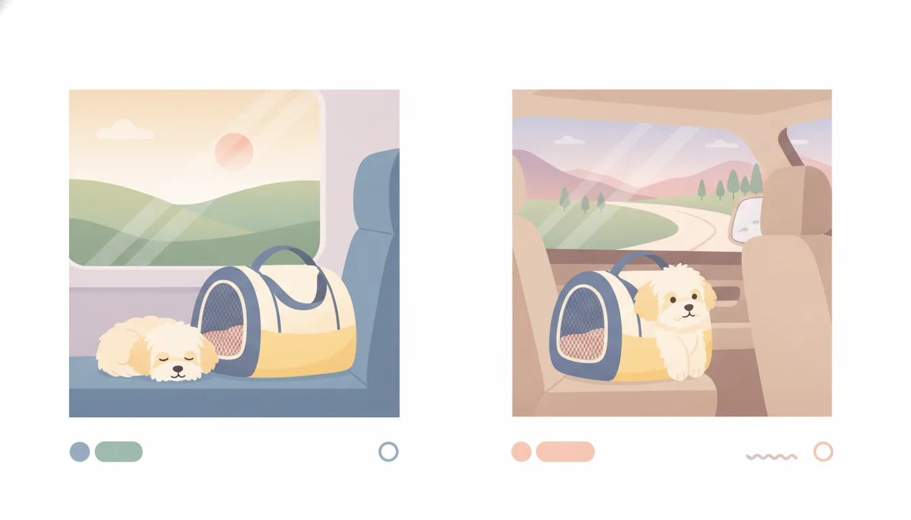

シーン別ペットキャリーの選び方|新幹線・車・飛行機での使い分けガイド
公開日: 2026-08-25
本ページのリンクには一部アフィリエイトリンクが含まれます(#PR)。
🐾 移動手段によってキャリー選びが変わる理由
ペットとのお出かけが増える季節になると、キャリー選びに悩む飼い主さんは多いのではないかと思います。実は「どこへ行くか」よりも「何で移動するか」によって、適したキャリーの条件はかなり変わってきます。新幹線と車、飛行機では持ち込みルールも揺れ方も違うため、それぞれに合わせた選び方を知っておくと安心です。
ここでは移動手段別にチェックしておきたいポイントを整理してみます。
🚄 新幹線移動でのキャリー選びのポイント
新幹線でペットを連れて乗車する場合、多くの鉄道会社では「ケースに入れた状態で、縦・横・高さの合計が一定サイズ以内」「総重量が決められた範囲内」といった規定が設けられています。乗車前に必ず各社の公式ルールを確認しておきましょう。
座席の下や膝の上に置くスペースを考えると、あまり大きすぎるキャリーは現実的ではありません。以下のような点を意識して選ぶとよさそうです。
- 座席下や足元に収まるコンパクトなサイズ
- 底面がしっかりしていて型崩れしにくい素材
- ペットが顔を出しすぎないよう、通気口の位置が工夫されているもの
車内は静かな空間なので、物音が響きやすいという面もあります。ファスナーの開閉音が小さいタイプや、底に厚みのあるクッションが入っているものだと、周囲への配慮もしやすくなります。
🚗 車移動なら安全性重視で選ぶ
車での移動は荷物の制限が少ない分、キャリーのサイズにはある程度余裕を持たせやすい環境です。ただし気をつけたいのは「揺れ」への対策です。急ブレーキやカーブの際にキャリーが座席から滑り落ちないよう、シートベルトを通せるループや、チャイルドシート用の固定具に対応した設計かどうかを確認しておくと安心感が違います。
長距離ドライブになる場合は、以下の点も比較材料になります。
- 底面の防水加工(粗相をしても掃除しやすいか)
- 横になれる程度の広さがあるか
- 換気がしやすく、車内の温度変化に対応できる通気性
車は休憩を挟みやすいので、キャリーから一時的に出して水分補給をさせやすい構造かどうかも、地味に重要なポイントになります。
✈️ 飛行機での機内持ち込み・預け入れの違い
飛行機は移動手段の中でもっともルールが細かい部類に入ります。航空会社によって、機内持ち込みができるサイズ・重量の上限、預け入れ用ケースの規格が異なるため、事前確認は欠かせません。特に小型犬・猫のオーナーが多く利用する国内線でも、会社ごとに数センチ単位で基準が違うことがあります。
機内持ち込みの場合は、次のような条件を満たすキャリーが選ばれやすい傾向にあります。
- 座席下に完全に収まるロープロファイル(薄型)設計
- ソフトタイプで多少の圧縮がきく素材
- ペットが動いても外から見えにくい、目隠しできる構造
預け入れが必要な大型犬などの場合は、IATA(国際航空運送協会)の基準に準拠したハードケースが求められることが一般的です。購入前に対象の航空会社が指定する規格を確認しておくとトラブルを避けやすくなります。
🧳 兼用できるキャリーを探すときの視点
「新幹線でも車でも使えるキャリーが欲しい」という声もよく聞きます。完全に万能なキャリーというのは正直なところ存在しにくいのですが、比較的汎用性が高いのは次のようなタイプです。
- ソフト素材で多少の変形が利き、複数の移動手段の規定に収まりやすいもの
- 肩掛け・手持ち・キャリーカート装着など、持ち方を切り替えられるもの
- 付属パーツ(ショルダーベルトやカバー)を取り外して用途を調整できるもの
ただし飛行機を利用する予定がある場合は、最終的に航空会社の規定が最優先になります。汎用タイプを選ぶ際も、一番厳しい基準に合わせておくと後々困りにくいはずです。また、購入前にレビューやサイズ実測値を確認し、カタログ表記とのズレがないかをチェックしておくと、現地で慌てずに済みます。
🐶 ペットの性格・体格から考える選び方
移動手段だけでなく、ペット自身の性格もキャリー選びには影響します。狭い空間が苦手な子には、天井が高めで圧迫感の少ないタイプが向いていますし、逆に落ち着きやすい子には囲われた薄暗い空間の方が安心する場合もあります。
体格面では、キャリー内で方向転換ができる程度の余裕があるかどうかが目安のひとつです。窮屈すぎても、逆に広すぎて揺れで体が滑ってしまっても、ペットにとってはストレスになりやすいので、体のサイズに合わせた選定を心がけたいところです。
❓ よくある質問
Q. 新幹線と飛行機、両方で使えるキャリーはありますか?
汎用的に使えるサイズのキャリーもありますが、飛行機は航空会社ごとに規定が細かく異なります。両方で使う予定があるなら、事前に各社の公式サイトでサイズ・重量の基準を確認し、一番厳しい条件に合わせて選ぶのが安心です。
Q. キャリーの中でペットが鳴いてしまうのが心配です。どう選べばいいですか?
普段からキャリーに慣れておくことが前提にはなりますが、キャリー選びの面では、外の音や視界の変化が少ない、囲われた構造のものだと落ち着きやすい傾向があるようです。使い慣れた毛布やタオルを中に入れておくのも一つの工夫です。
Q. サイズはどのくらいの余裕を持たせればいいですか?
ペットが中で立ち上がったり、方向転換できたりする程度の余裕が目安とされています。ただし移動手段によっては持ち込みサイズの上限があるため、余裕を持たせすぎると規定オーバーになる場合もある点は注意が必要です。
この記事でおすすめしたいアイテム
 PR
PR
 PR
PR
本ページのリンクには一部アフィリエイトリンクが含まれます(#PR)。